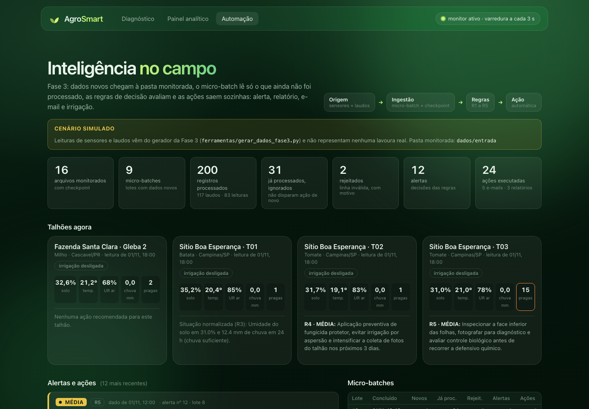
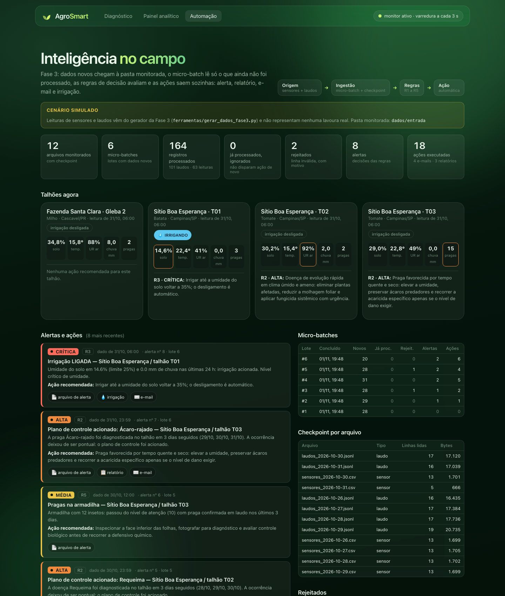
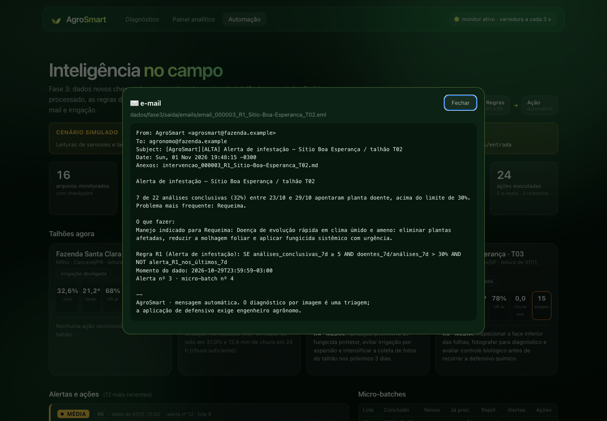
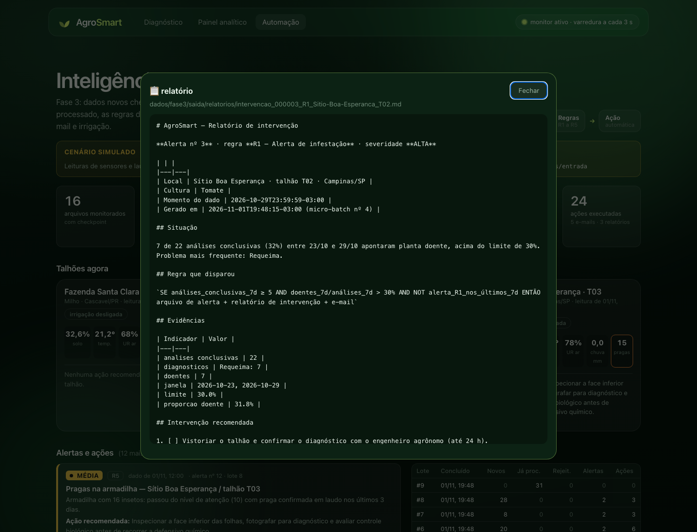
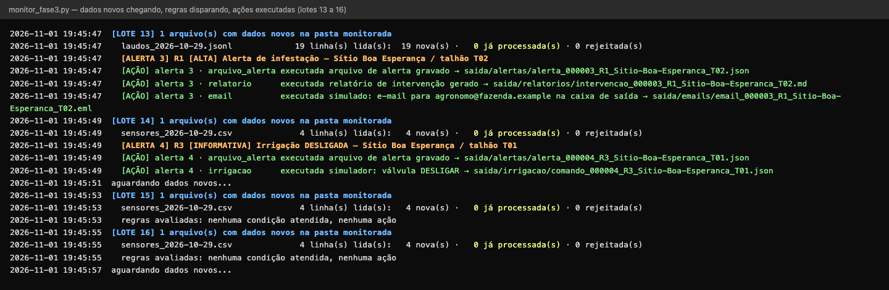
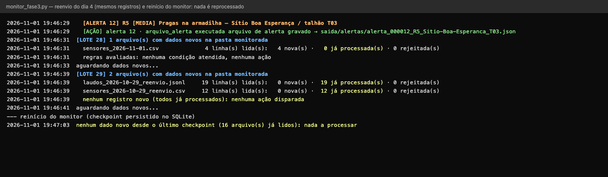

Inteligência no Campo: regras de decisão, automação e entrada automatizada de dados
Grupo: Camila Grossi Gomes · Felipe Casquet Ferreira · Leonardo Rodrigues Amzehnhoff · Lucas Henrique Claro Ribeiro · Paulo Sergio Morais Gonçalves
FIAP · Sprint 3 · novembro de 2026
Repositório: github.com/FIAP-2025-GROUP/AgroSmart · código em src/automacao/, ferramentas/, web/automacao.*
/automacao. Os 42 testes
automatizados da Fase 3 passam, junto com os 143 das fases anteriores (185 no total).
As regras usam os dados das fases anteriores: os laudos (contrato 2.0.0 da Fase 2, com condição, diagnóstico
normalizado e categoria doença/praga) e as leituras de sensores por talhão. Cada regra é uma função pura em
src/automacao/regras.py. Os limites estão num único lugar, contratos.LIMITES. Toda regra tem um termo
NOT de carência, que impede repetir o mesmo alerta enquanto o episódio continua.
| Regra | Entrada | Avaliação booleana | Dispara? |
|---|---|---|---|
| R1 | 4 análises, 2 doentes | 4 ≥ 5 = F | não |
| R1 | 10 análises, 3 doentes (30%) | V AND (30% > 30% = F) | não |
| R1 | 10 análises, 4 doentes (40%) | V AND V AND NOT F | sim |
| R1 | idem, com alerta R1 há 2 dias | V AND V AND NOT V | não |
| R2 | requeima em 28, 29 e 30/10 | V AND V AND V AND NOT F | sim |
| R2 | requeima em 27, 29 e 30/10 | D−1 V, D−2 F | não |
| R3 | solo 24%, chuva 0, desligada | V AND V AND NOT F | liga |
| R3 | solo 14%, chuva 0, desligada | LIGAR AND 14 < 15 | liga (crítico) |
| R3 | solo 24%, chuva 6 mm, desligada | V AND F | não |
| R3 | solo 30%, ligada | V AND (F OR F) | mantém |
| R3 | solo 28%, chuva 5 mm, ligada | V AND (F OR V) | desliga |
| R4 | UR 93%/T 18 °C só na leitura atual | 2 leituras seguidas = F | não |
| R4 | Milho com UR 93% e T 18 °C | cultura ∈ {Tomate, Batata} = F | não |
| R5 | 12 insetos, sem laudo de praga | F OR (V AND F) | não |
| R5 | 12 insetos, ácaro-rajado em laudo | F OR (V AND V) | sim (média) |
| R5 | 20 insetos | V OR … | sim (alta + e-mail) |
a cada N segundos:
para cada arquivo em dados/entrada/ com bytes além do checkpoint:
linhas ← linhas completas após o checkpoint # nunca relê o que já foi lido
para cada linha: SE inválida ENTÃO rejeitados
SENÃO SE chave já existe ENTÃO ignora (duplicado)
SENÃO grava como NOVO do lote
grava checkpoint # mesma transação dos registros
para cada talhão/dia tocado por registros NOVOS:
SE R1 OR R2 OR R3 OR R4 OR R5 (cada uma com seu AND NOT carência) ENTÃO
grava alerta (chave única) + ações pendentes # outbox
executa ações pendentes → marca executada
| Ação | Disparada por | Resultado (em dados/fase3/saida/) |
|---|---|---|
| Arquivo de alerta | todas as regras | alertas/alerta_<id>_<regra>_<local>.json + consolidado alertas/alertas.csv (abre no Excel) |
| Relatório de intervenção | R1 | relatorios/intervencao_….md: situação, regra, evidências, checklist |
| Plano de controle | R2 | relatorios/plano_….md: 5 passos (confirmar, aplicar manejo do catálogo, isolar, reavaliar, registrar) |
| E-mail ao agrônomo | R1, R2, R3 crítico, R5 ≥ 20 | emails/email_….eml com o relatório anexo; enviado de verdade por SMTP se AGROSMART_SMTP_HOST estiver no .env |
| Simulador de irrigação | R3 | irrigacao/comando_….json (LIGAR/DESLIGAR) + estado da válvula por talhão no banco |
| Recomendação no painel | todas | http://localhost:8000/automacao: atualiza a cada 3 s, mostra talhões, irrigação, alertas e o conteúdo de cada ação |
Confiabilidade. O alerta e suas ações nascem na mesma transação, com status pendente (padrão outbox), e só depois são executados. Se o processo cair no meio, as ações pendentes rodam no ciclo seguinte. Cada arquivo gerado é nomeado pelo id do alerta, então reexecutar sobrescreve em vez de duplicar. Uma ação que falha (SMTP fora do ar, por exemplo) fica como falhou e não derruba o monitor.




Escolhemos o micro-batch porque a latência que as regras pedem é compatível com ele. R1 e R2 trabalham em janelas de dias: “30% de doentes em 7 dias” e “3 dias seguidos” não ganham nada com tempo real, já que o dado de origem (fotos tiradas pelo produtor) chega em lotes ao longo do dia. R4 e R5 olham tendência em horas. A regra mais exigente é a R3 (umidade crítica do solo), que precisa reagir em minutos. Com varredura a cada 5 s (configurável), a latência máxima é o intervalo de varredura mais alguns milissegundos de processamento (2 s na execução da evidência), bem abaixo do tempo em que o solo seca de forma relevante.
O micro-batch também é o modelo que cabe na realidade do campo: estações e celulares sem conexão contínua descarregam arquivos quando conseguem, e cada arquivo pode chegar atrasado ou repetido. A pasta monitorada com checkpoint resolve isso sem infraestrutura extra (só Python e SQLite) e roda em qualquer máquina do avaliador. O streaming com Kafka passa a valer a pena com milhares de sensores enviando eventos contínuos ou quando várias aplicações consomem o mesmo fluxo. As regras são funções puras sobre registros, então trocar a camada de ingestão por um consumer Kafka não exige mudar a lógica de decisão.
| Mecanismo | O que garante |
|---|---|
Checkpoint por arquivo (arquivos: bytes e linhas lidas + SHA-256 do trecho lido) | Arquivo que cresce é lido só do ponto onde parou. Arquivo igual é ignorado. Arquivo reescrito é detectado e relido. |
| Só linhas completas (terminadas em quebra de linha) | Uma linha que o produtor ainda está escrevendo fica para o próximo ciclo. |
Chave única por registro (id_laudo com a origem; id_leitura) | O mesmo dado entregue de novo, em outro arquivo, é contado como “já processado” e não dispara ação. |
| Registros + checkpoint na mesma transação | Uma queda no meio não deixa o checkpoint à frente dos dados nem o contrário. |
Lote sem concluido_em é reavaliado | Queda entre a ingestão e as regras não perde alerta; a chave do alerta impede duplicata. |
Escrita atômica do produtor (.nome.tmp → renomeia) | O monitor nunca vê um arquivo novo pela metade. |
Leitura de sensor: sensores_*.csv (separador , e decimal .; também aceita ; com decimal ,, padrão do Excel PT-BR) ou sensores_*.jsonl.
| Campo | Tipo | Unidade | Obrig. | Faixa válida | Exemplo |
|---|---|---|---|---|---|
| id_leitura | texto | — | sim | único | sns-est-sbe-T01-20261031T0600 |
| instante | texto ISO-8601 | data/hora com fuso | sim | sem fuso = Brasília | 2026-10-31T06:00:00-03:00 |
| id_sensor | texto | — | sim | est-sbe-T01 | |
| uf, municipio | texto | — | não | SP, Campinas | |
| propriedade, talhao | texto | — | sim | Sítio Boa Esperança, T01 | |
| cultura | texto | — | sim | normalizada por sinônimo | Batata |
| umidade_solo_pct | decimal | % volumétrica | sim | 0 a 100 | 14.6 |
| temperatura_c | decimal | °C | sim | −10 a 55 | 22.4 |
| umidade_ar_pct | decimal | % UR | sim | 0 a 100 | 41 |
| chuva_mm | decimal | mm desde a leitura anterior | sim | 0 a 300 | 0 |
| pragas_armadilha | inteiro | insetos/armadilha | sim | 0 a 10 000 | 3 |
Laudo de diagnóstico: laudos_*.jsonl, no mesmo contrato 2.0.0 da Fase 2 (30 campos, documentados em
docs/fase2_dados_e_execucao.md). Campos usados pelas regras:
| Campo | Tipo | Uso | Exemplo |
|---|---|---|---|
| id_laudo / id_analise | texto | chave única / agrupa CNN + VLM da mesma foto | f3-ld-20261029-T02-003 |
| data_analise | texto ISO-8601 | dia do evento (janelas de R1, R2, R5) | 2026-10-29T10:41:07-03:00 |
| propriedade, talhao | texto | agrupamento por talhão | Sítio Boa Esperança, T02 |
| condicao | texto | saudável / doente / indeterminado | doente |
| diagnostico_original → normalizado | texto | problema P da R2 (“Míldio tardio” vira Requeima) | Requeima |
| categoria (derivada) | texto | doença / praga (R2, R5) | doenca |
| motor, confianca | texto, decimal 0–1 | laudo principal (CNN conclusivo primeiro) | CNN especializado, 0.912 |
| manejo | texto | recomendação do relatório e do e-mail | “eliminar plantas afetadas…” |
Exemplo de registro (linha do CSV de sensores):
id_leitura,instante,id_sensor,uf,municipio,propriedade,talhao,cultura,umidade_solo_pct,temperatura_c,umidade_ar_pct,chuva_mm,pragas_armadilha sns-est-sbe-T01-20261031T0600,2026-10-31T06:00:00-03:00,est-sbe-T01,SP,Campinas,Sítio Boa Esperança,T01,Batata,14.6,22.4,41,0,3
Exemplo de alerta gerado (saida/alertas/alerta_000008_R3_….json, resumido):
{"id": 8, "regra": "R3", "severidade": "critica", "titulo": "Irrigação LIGADA — Sítio Boa Esperança / talhão T01",
"mensagem": "Umidade do solo em 14.6% (limite 25%) e 0.0 mm de chuva nas últimas 24 h: irrigação acionada. Nível crítico de umidade.",
"instante_evento": "2026-10-31T06:00:00-03:00", "evidencias": {"umidade_solo_pct": 14.6, "chuva_24h_mm": 0.0, "estava_ligada": false}}
ferramentas/gerar_dados_fase3.py publica 7 dias (26/10 a 01/11/2026) de 4 talhões, montados para
exercitar cada regra. Com --continuo, publica os laudos do dia e depois acrescenta ao mesmo CSV as
leituras de 06h, 12h e 18h, o que exercita o checkpoint de arquivo que cresce. Com --reenviar N, entrega de
novo o dia N com outro nome. Com --fase2, reaproveita os laudos simulados da Fase 2. Os dados não
representam nenhuma lavoura real.
| Dia | Talhão | O que chega | Resposta do sistema |
|---|---|---|---|
| 27/10 | T02 Tomate | UR 93% e 91% com 17 a 21 °C | R4 MÉDIA: risco de requeima |
| 28/10 | T01 Batata | solo 24,1%, sem chuva | R3: irrigação LIGADA |
| 28/10 | Gleba 2 Milho | sensor marca 140% de umidade | linha rejeitada (fora da faixa) |
| 29/10 | T02 Tomate | 7 de 22 análises doentes (32%) | R1 ALTA: relatório + e-mail |
| 29/10 | T01 Batata | solo 36,2% | R3: irrigação DESLIGADA |
| 30/10 | T02 / T03 | requeima no 3º dia seguido; 12 insetos + laudo de ácaro | R2 plano de controle + e-mail; R5 MÉDIA |
| 31/10 | T01 / T03 | solo 14,6%; ácaro no 3º dia; 21 insetos | R3 CRÍTICA + e-mail; R2 plano; R5 ALTA + e-mail |
| 01/11 | T01 Batata | 12,4 mm de chuva | R3: irrigação DESLIGADA (chuva) |
| — | Gleba 2 Milho | tudo normal (grupo de controle) | nenhum alerta, como esperado |
| reenvio | dia 29/10 de novo | 31 registros já processados | nenhuma ação |
Total: 200 registros processados, 2 rejeitados, 31 duplicados ignorados, 12 alertas (R1 1, R2 2, R3 4, R4 2, R5 3), 24 ações executadas (5 e-mails, 3 relatórios, 4 comandos de irrigação, 12 arquivos de alerta).
O log completo está em docs/fase3/evidencias/execucao_monitor.log e a saída do produtor em
execucao_gerador.log. Os trechos abaixo mostram dados novos chegando, sendo processados e gerando ação. Mostram
também que o reenvio e o reinício do monitor não disparam nada de novo.


py -3.12 -m venv .venv .venv\Scripts\python.exe -m pip install -r requirements.txt # terminal 1 — monitor (fica rodando, sem intervenção) .venv\Scripts\python.exe ferramentas\monitor_fase3.py --reiniciar # terminal 2 — painel .venv\Scripts\python.exe servidor.py → http://localhost:8000/automacao # terminal 3 — chegada de dados .venv\Scripts\python.exe ferramentas\gerar_dados_fase3.py --continuo --intervalo 6 .venv\Scripts\python.exe ferramentas\gerar_dados_fase3.py --reenviar 4 # prova de não-reprocessamento # testes .venv\Scripts\python.exe -m pytest testes\test_automacao.py
.eml) até alguém configurar o SMTP no .env. O envio real
foi testado com um servidor SMTP simulado nos testes automatizados.